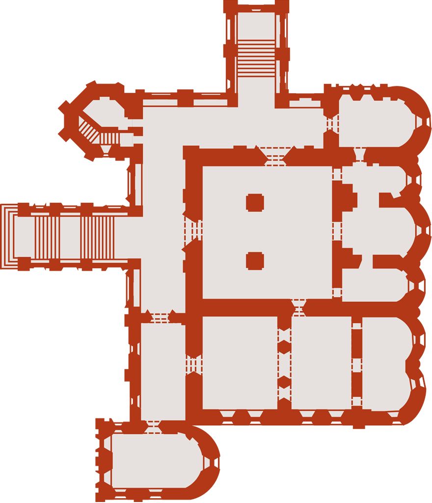

|
 |
фотографии |
план храма |
Поражает одновременно и деловая сметка, и глубокая, истинная вера этой семьи. При строительстве церковь была поставлена на высокий подклет, чтобы пространства под галереей можно было сдавать внаём под лавки и на эти деньги содержать причт. Перед смертью Вонифатий и Иоанникий успели достроить церковь и обеспечить её всем необходимым, в том числе своими домашними иконами. Новый иконостас частично «подгорел» при пожаре 1658 года и был переделан мастером из Сольвычегодска Фёдором Зубовым ещё при жизни строителей храма. А через двадцать лет после смерти братьев вдова Вонифатия Улита Макаровна заказала лучшим в то время иконописцам — костромичам Гурию Никитину и Силе Савину с помощниками — роспись храма. Эти фрески (1680) и есть главная жемчужина церкви, уникальный памятник, ради которого стоит совершить путешествие в Ярославль. Особенность росписи в том, что она содержит много сцен, никогда прежде не встречавшихся в православных храмах; источником вдохновения костромских мастеров скорее всего была знаменитая «Библия Пискатора» — иллюстрированное гравюрами западноевропейское издание, получившее большую популярность у русских изографов второй половины XVII века. Самая известная из фресок «Жатва» (на южной стене храма) демонстрирует в полной мере общий принцип этой росписи, развивающейся лентой ярусов, внутри которых нет деления на сюжетные сцены, и часто второстепенные бытовые детали оказываются написанными более живо и притягивают к себе больше внимания, чем те сцены, ради которых они написаны. Библейский сюжет, который в «Жатве» практически заслонён изображением полевых работ, — «Смерть сына сунамитянки во время жатвы». Придел Покрова, галереи церкви и разделяющие их металлические двери также имеют сюжетную и декоративную роспись, немного более позднюю, но очень выразительную.